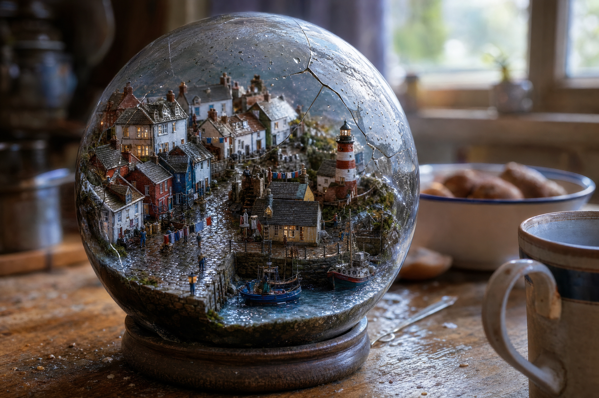

ARTIFACT 01 / MARKETING STUDIO IMAGE
The globe before motion.
The original PNG used as the starting-image input for the video. Requested 2K / 3:2; measured 2048 × 1360.

ARTIFACT 01 / MARKETING STUDIO IMAGE
The original PNG used as the starting-image input for the video. Requested 2K / 3:2; measured 2048 × 1360.
